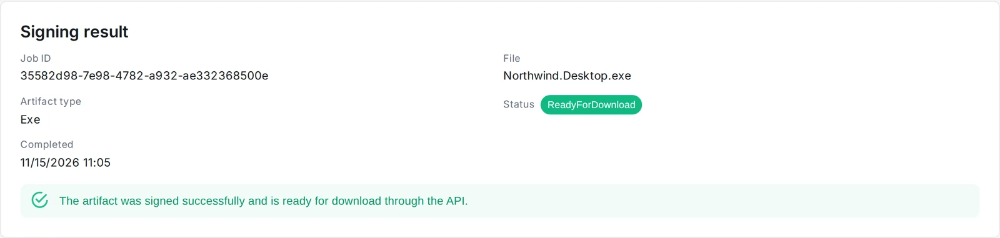
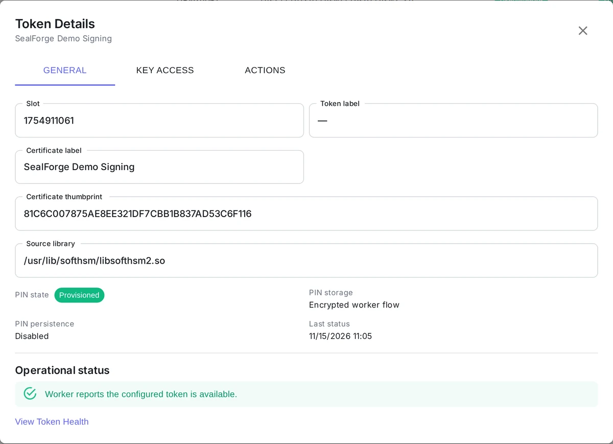

Encrypted PIN provisioning
The browser encrypts the PIN to the worker’s public key. The worker decrypts it for use through a short-lived, owner-only lease under /dev/shm. Persisted PIN data is an encrypted envelope.
Technical guide
For operators and security reviewers. Start with the architecture, then dig into the controls that protect a signing job.
The web application authorizes requests and manages job state. An isolated worker is the only service that opens the PKCS#11 module.
Security model
Not just a sign button. Access, PIN handling and verification each have an explicit boundary.
The browser encrypts the PIN to the worker’s public key. The worker decrypts it for use through a short-lived, owner-only lease under /dev/shm. Persisted PIN data is an encrypted envelope.
Permissions bind a principal, token and exact certificate thumbprint. A failed token unlock clears the PIN and soft-locks access until an administrator reviews it with fresh MFA.
Timestamping is required. The signature chain must verify against the configured CA bundle before the job becomes ready for download. A failed check fails the job.
Supported extensions are checked against their expected content structure: MZ for EXE/DLL, OLE for MSI and a NuGet manifest inside NUPKG. This is format validation, not malware scanning.
Fits your build pipeline
An asynchronous REST API for EXE, DLL, MSI and NuGet packages. Set your instance URL and API key before using the example.
# Submit an artifact (API key with submit permission)
curl --fail-with-body "$SEALFORGE_URL/api/v1/signing-jobs" \
-H "Authorization: Bearer $SEALFORGE_API_KEY" \
-F "artifact=@release.exe"
# Poll the returned job ID, then download when ready
curl --fail-with-body "$SEALFORGE_URL/api/v1/signing-jobs/$JOB_ID" \
-H "Authorization: Bearer $SEALFORGE_API_KEY"
curl --fail-with-body --output signed.exe \
"$SEALFORGE_URL/api/v1/signing-jobs/$JOB_ID/download" \
-H "Authorization: Bearer $SEALFORGE_API_KEY"Linux-only deployment. No hosted signing service is required.
The product repository is private. Sign in with an invited GitHub account; other visitors will see GitHub’s 404 page. It contains the security model, API contract, changelog and deployment guide.
Open the private repository →Inside the product
Real screenshots from a SoftHSM demo instance. Software-token evidence, not a physical-HSM certification.

